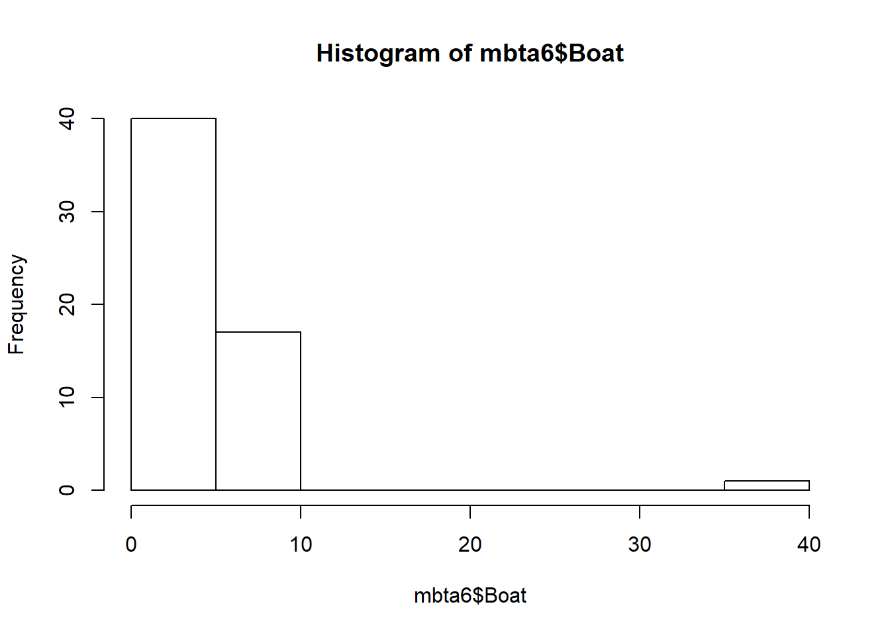
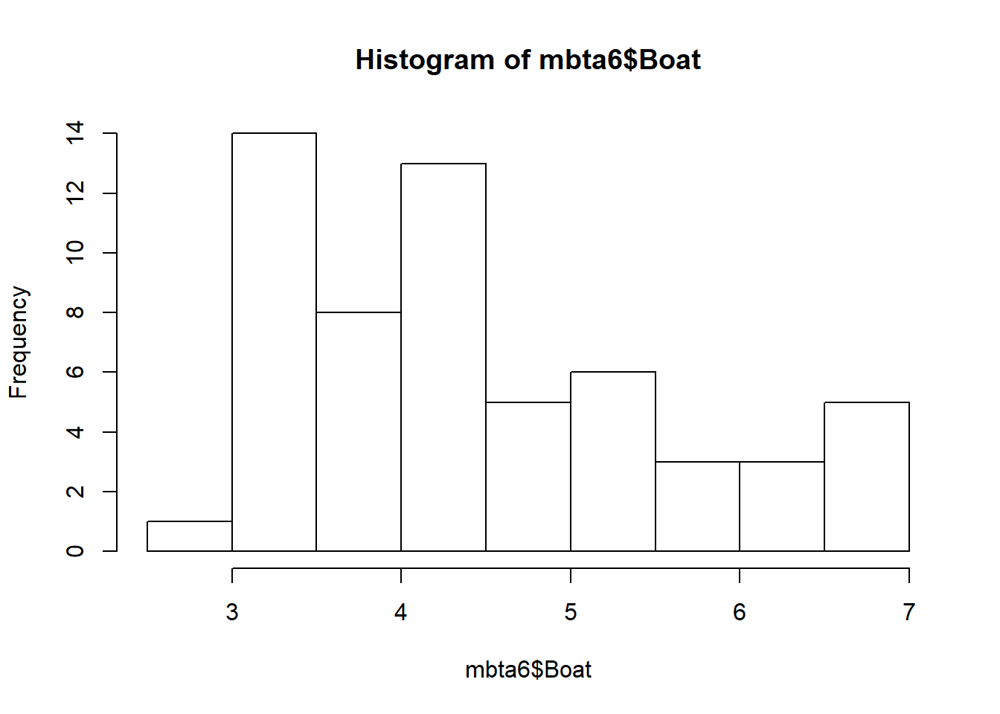

The Massachusetts Bay Transportation Authority (“MBTA” or just “the T” for short) manages America’s oldest subway, as well as Greater Boston’s commuter rail, ferry, and bus systems.
We will clean the data. The dataset is stored as an Excel spreadsheet called mbta.xlsx.
The first row is a title, so we’ll need to skip the first row.
# Load readxl
library(readxl)
# Import mbta.xlsx and skip first row: mbta
mbta <- read_excel("mbta.xlsx", skip = 1)## New names:
## * `` -> ...1The first step when cleaning a dataset is to explore it a bit. Pay particular attention to how the rows and columns are organized and to the locations of missing values.
# View the structure of mbta
str(mbta)## Classes 'tbl_df', 'tbl' and 'data.frame': 11 obs. of 60 variables:
## $ ...1 : num 1 2 3 4 5 6 7 8 9 10 ...
## $ mode : chr "All Modes by Qtr" "Boat" "Bus" "Commuter Rail" ...
## $ 2007-01: chr "NA" "4" "335.819" "142.2" ...
## $ 2007-02: chr "NA" "3.6" "338.675" "138.5" ...
## $ 2007-03: num 1188 40 340 138 459 ...
## $ 2007-04: chr "NA" "4.3" "352.162" "139.5" ...
## $ 2007-05: chr "NA" "4.9" "354.367" "139" ...
## $ 2007-06: num 1246 5.8 350.5 143 477 ...
## $ 2007-07: chr "NA" "6.521" "357.519" "142.391" ...
## $ 2007-08: chr "NA" "6.572" "355.479" "142.364" ...
## $ 2007-09: num 1256.57 5.47 372.6 143.05 499.57 ...
## $ 2007-10: chr "NA" "5.145" "368.847" "146.542" ...
## $ 2007-11: chr "NA" "3.763" "330.826" "145.089" ...
## $ 2007-12: num 1216.89 2.98 312.92 141.59 448.27 ...
## $ 2008-01: chr "NA" "3.175" "340.324" "142.145" ...
## $ 2008-02: chr "NA" "3.111" "352.905" "142.607" ...
## $ 2008-03: num 1253.52 3.51 361.15 137.45 494.05 ...
## $ 2008-04: chr "NA" "4.164" "368.189" "140.389" ...
## $ 2008-05: chr "NA" "4.015" "363.903" "142.585" ...
## $ 2008-06: num 1314.82 5.19 362.96 142.06 518.35 ...
## $ 2008-07: chr "NA" "6.016" "370.921" "145.731" ...
## $ 2008-08: chr "NA" "5.8" "361.057" "144.565" ...
## $ 2008-09: num 1307.04 4.59 389.54 141.91 517.32 ...
## $ 2008-10: chr "NA" "4.285" "357.974" "151.957" ...
## $ 2008-11: chr "NA" "3.488" "345.423" "152.952" ...
## $ 2008-12: num 1232.65 3.01 325.77 140.81 446.74 ...
## $ 2009-01: chr "NA" "3.014" "338.532" "141.448" ...
## $ 2009-02: chr "NA" "3.196" "360.412" "143.529" ...
## $ 2009-03: num 1209.79 3.33 353.69 142.89 467.22 ...
## $ 2009-04: chr "NA" "4.049" "359.38" "142.34" ...
## $ 2009-05: chr "NA" "4.119" "354.75" "144.225" ...
## $ 2009-06: num 1233.1 4.9 347.9 142 473.1 ...
## $ 2009-07: chr "NA" "6.444" "339.477" "137.691" ...
## $ 2009-08: chr "NA" "5.903" "332.661" "139.158" ...
## $ 2009-09: num 1230.5 4.7 374.3 139.1 500.4 ...
## $ 2009-10: chr "NA" "4.212" "385.868" "137.104" ...
## $ 2009-11: chr "NA" "3.576" "366.98" "129.343" ...
## $ 2009-12: num 1207.85 3.11 332.39 126.07 440.93 ...
## $ 2010-01: chr "NA" "3.207" "362.226" "130.91" ...
## $ 2010-02: chr "NA" "3.195" "361.138" "131.918" ...
## $ 2010-03: num 1208.86 3.48 373.44 131.25 483.4 ...
## $ 2010-04: chr "NA" "4.452" "378.611" "131.722" ...
## $ 2010-05: chr "NA" "4.415" "380.171" "128.8" ...
## $ 2010-06: num 1244.41 5.41 363.27 129.14 490.26 ...
## $ 2010-07: chr "NA" "6.513" "353.04" "122.935" ...
## $ 2010-08: chr "NA" "6.269" "343.688" "129.732" ...
## $ 2010-09: num 1225.5 4.7 381.6 132.9 521.1 ...
## $ 2010-10: chr "NA" "4.402" "384.987" "131.033" ...
## $ 2010-11: chr "NA" "3.731" "367.955" "130.889" ...
## $ 2010-12: num 1216.26 3.16 326.34 121.42 450.43 ...
## $ 2011-01: chr "NA" "3.14" "334.958" "128.396" ...
## $ 2011-02: chr "NA" "3.284" "346.234" "125.463" ...
## $ 2011-03: num 1223.45 3.67 380.4 134.37 516.73 ...
## $ 2011-04: chr "NA" "4.251" "380.446" "134.169" ...
## $ 2011-05: chr "NA" "4.431" "385.289" "136.14" ...
## $ 2011-06: num 1302.41 5.47 376.32 135.58 529.53 ...
## $ 2011-07: chr "NA" "6.581" "361.585" "132.41" ...
## $ 2011-08: chr "NA" "6.733" "353.793" "130.616" ...
## $ 2011-09: num 1291 5 388 137 550 ...
## $ 2011-10: chr "NA" "4.484" "398.456" "128.72" ...# View the first 6 rows of mbta
head(mbta)## # A tibble: 6 x 60
## ...1 mode `2007-01` `2007-02` `2007-03` `2007-04` `2007-05` `2007-06` `2007-07` `2007-08` `2007-09`
## <dbl> <chr> <chr> <chr> <dbl> <chr> <chr> <dbl> <chr> <chr> <dbl>
## 1 1 All ~ NA NA 1188. NA NA 1246. NA NA 1257.
## 2 2 Boat 4 3.6 40 4.3 4.9 5.8 6.521 6.572 5.47
## 3 3 Bus 335.819 338.675 340. 352.162 354.367 351. 357.519 355.479 373.
## 4 4 Comm~ 142.2 138.5 138. 139.5 139 143 142.391 142.364 143.
## 5 5 Heav~ 435.294 448.271 459. 472.201 474.579 477. 471.735 461.605 500.
## 6 6 Ligh~ 227.231 240.262 241. 255.557 248.262 246. 243.286 234.907 266.
## # ... with 49 more variables: `2007-10` <chr>, `2007-11` <chr>, `2007-12` <dbl>, `2008-01` <chr>,
## # `2008-02` <chr>, `2008-03` <dbl>, `2008-04` <chr>, `2008-05` <chr>, `2008-06` <dbl>,
## # `2008-07` <chr>, `2008-08` <chr>, `2008-09` <dbl>, `2008-10` <chr>, `2008-11` <chr>,
## # `2008-12` <dbl>, `2009-01` <chr>, `2009-02` <chr>, `2009-03` <dbl>, `2009-04` <chr>,
## # `2009-05` <chr>, `2009-06` <dbl>, `2009-07` <chr>, `2009-08` <chr>, `2009-09` <dbl>,
## # `2009-10` <chr>, `2009-11` <chr>, `2009-12` <dbl>, `2010-01` <chr>, `2010-02` <chr>,
## # `2010-03` <dbl>, `2010-04` <chr>, `2010-05` <chr>, `2010-06` <dbl>, `2010-07` <chr>,
## # `2010-08` <chr>, `2010-09` <dbl>, `2010-10` <chr>, `2010-11` <chr>, `2010-12` <dbl>,
## # `2011-01` <chr>, `2011-02` <chr>, `2011-03` <dbl>, `2011-04` <chr>, `2011-05` <chr>,
## # `2011-06` <dbl>, `2011-07` <chr>, `2011-08` <chr>, `2011-09` <dbl>, `2011-10` <chr># View a summary of mbta
summary(mbta)## ...1 mode 2007-01 2007-02 2007-03
## Min. : 1.0 Length:11 Length:11 Length:11 Min. : 0.114
## 1st Qu.: 3.5 Class :character Class :character Class :character 1st Qu.: 9.278
## Median : 6.0 Mode :character Mode :character Mode :character Median : 137.700
## Mean : 6.0 Mean : 330.293
## 3rd Qu.: 8.5 3rd Qu.: 399.225
## Max. :11.0 Max. :1204.725
## 2007-04 2007-05 2007-06 2007-07 2007-08
## Length:11 Length:11 Min. : 0.096 Length:11 Length:11
## Class :character Class :character 1st Qu.: 5.700 Class :character Class :character
## Mode :character Mode :character Median : 143.000 Mode :character Mode :character
## Mean : 339.846
## 3rd Qu.: 413.788
## Max. :1246.129
## 2007-09 2007-10 2007-11 2007-12 2008-01
## Min. : -0.007 Length:11 Length:11 Min. : -0.060 Length:11
## 1st Qu.: 5.539 Class :character Class :character 1st Qu.: 4.385 Class :character
## Median : 143.051 Mode :character Mode :character Median : 141.585 Mode :character
## Mean : 352.554 Mean : 321.588
## 3rd Qu.: 436.082 3rd Qu.: 380.594
## Max. :1310.764 Max. :1216.890
## 2008-02 2008-03 2008-04 2008-05 2008-06
## Length:11 Min. : 0.058 Length:11 Length:11 Min. : 0.060
## Class :character 1st Qu.: 5.170 Class :character Class :character 1st Qu.: 5.742
## Mode :character Median : 137.453 Mode :character Mode :character Median : 142.057
## Mean : 345.604 Mean : 359.667
## 3rd Qu.: 427.601 3rd Qu.: 440.656
## Max. :1274.031 Max. :1320.728
## 2008-07 2008-08 2008-09 2008-10 2008-11
## Length:11 Length:11 Min. : 0.021 Length:11 Length:11
## Class :character Class :character 1st Qu.: 5.691 Class :character Class :character
## Mode :character Mode :character Median : 141.907 Mode :character Mode :character
## Mean : 362.099
## 3rd Qu.: 453.430
## Max. :1338.015
## 2008-12 2009-01 2009-02 2009-03 2009-04
## Min. : -0.015 Length:11 Length:11 Min. : -0.050 Length:11
## 1st Qu.: 4.689 Class :character Class :character 1st Qu.: 5.003 Class :character
## Median : 140.810 Mode :character Mode :character Median : 142.893 Mode :character
## Mean : 319.882 Mean : 330.142
## 3rd Qu.: 386.255 3rd Qu.: 410.455
## Max. :1232.655 Max. :1210.912
## 2009-05 2009-06 2009-07 2009-08 2009-09
## Length:11 Min. : -0.079 Length:11 Length:11 Min. : -0.035
## Class :character 1st Qu.: 5.845 Class :character Class :character 1st Qu.: 5.693
## Mode :character Median : 142.006 Mode :character Mode :character Median : 139.087
## Mean : 333.194 Mean : 346.687
## 3rd Qu.: 410.482 3rd Qu.: 437.332
## Max. :1233.085 Max. :1291.564
## 2009-10 2009-11 2009-12 2010-01 2010-02
## Length:11 Length:11 Min. : -0.022 Length:11 Length:11
## Class :character Class :character 1st Qu.: 4.784 Class :character Class :character
## Mode :character Mode :character Median : 126.066 Mode :character Mode :character
## Mean : 312.962
## 3rd Qu.: 386.659
## Max. :1207.845
## 2010-03 2010-04 2010-05 2010-06 2010-07
## Min. : 0.012 Length:11 Length:11 Min. : 0.008 Length:11
## 1st Qu.: 5.274 Class :character Class :character 1st Qu.: 6.436 Class :character
## Median : 131.252 Mode :character Mode :character Median : 129.144 Mode :character
## Mean : 332.726 Mean : 335.964
## 3rd Qu.: 428.420 3rd Qu.: 426.769
## Max. :1225.556 Max. :1244.409
## 2010-08 2010-09 2010-10 2010-11 2010-12
## Length:11 Min. : 0.001 Length:11 Length:11 Min. : -0.004
## Class :character 1st Qu.: 5.567 Class :character Class :character 1st Qu.: 4.466
## Mode :character Median : 132.892 Mode :character Mode :character Median : 121.422
## Mean : 346.524 Mean : 312.917
## 3rd Qu.: 451.361 3rd Qu.: 388.385
## Max. :1293.117 Max. :1216.262
## 2011-01 2011-02 2011-03 2011-04 2011-05
## Length:11 Length:11 Min. : 0.05 Length:11 Length:11
## Class :character Class :character 1st Qu.: 6.03 Class :character Class :character
## Mode :character Mode :character Median : 134.37 Mode :character Mode :character
## Mean : 345.17
## 3rd Qu.: 448.56
## Max. :1286.66
## 2011-06 2011-07 2011-08 2011-09 2011-10
## Min. : 0.054 Length:11 Length:11 Min. : 0.043 Length:11
## 1st Qu.: 6.926 Class :character Class :character 1st Qu.: 6.660 Class :character
## Median : 135.581 Mode :character Mode :character Median : 136.901 Mode :character
## Mean : 353.331 Mean : 362.555
## 3rd Qu.: 452.923 3rd Qu.: 469.204
## Max. :1302.414 Max. :1348.754It appears that the data are organized with observations stored as columns rather than as rows.
First, though, we can address the missing data. All of the NA values are stored in the All Modes by Qtr row. This row really belongs in a different data frame; it is a quarterly average of weekday MBTA ridership. Since this dataset tracks monthly average ridership, we’ll remove that row.
Similarly, the 7th row (Pct Chg / Yr) and the 11th row (TOTAL) are not really observations as much as they are analysis. We can remove them as well.
The first column also needs to be removed because it’s just listing the row numbers.
In cas
# Remove rows 1, 7, and 11 of mbta: mbta2
mbta2 <- mbta[-c(1, 7, 11),]
# Remove the first column of mbta2: mbta3
mbta3 <- mbta2[,-1]The different modes of transportation (commuter rail, bus, subway, ferry, …) are variables, providing information about each month’s average ridership. The months themselves are observations. You can tell which is which because as you go through time, the month changes, but the modes of transport offered by the T do not.
The first step is to use the gather() function from the tidyr package, which will gather columns into key-value pairs.
# Load tidyr
library(tidyr)
# Gather columns of mbta3: mbta4
mbta4 <- gather(mbta3, month, thou_riders, -mode)
# View the head of mbta4
head(mbta4)## # A tibble: 6 x 3
## mode month thou_riders
## <chr> <chr> <chr>
## 1 Boat 2007-01 4
## 2 Bus 2007-01 335.819
## 3 Commuter Rail 2007-01 142.2
## 4 Heavy Rail 2007-01 435.294
## 5 Light Rail 2007-01 227.231
## 6 Private Bus 2007-01 4.772The dataset is long now – notice that the first column still stores variable names, but now, months have their own column instead of being headers. Also notice the data type of each column.
We’ll put variables where they belong (as column names). But first, we can change the average weekday ridership column, thou_riders, into numeric values rather than character strings. That way, you’ll be able to do things like compare values and do math.
# Coerce thou_riders to numeric
mbta4$thou_riders <- as.numeric(mbta4$thou_riders)We can now get variables into columns.
We’ll use the tidyr function spread() to make them into columns containing average weekday ridership for the given month and mode of transport.
# Spread the contents of mbta4: mbta5
mbta5 <- spread(mbta4, mode, thou_riders)
# View the head of mbta5
head(mbta5)## # A tibble: 6 x 9
## month Boat Bus `Commuter Rail` `Heavy Rail` `Light Rail` `Private Bus` RIDE `Trackless Trolley`
## <chr> <dbl> <dbl> <dbl> <dbl> <dbl> <dbl> <dbl> <dbl>
## 1 2007-01 4 336. 142. 435. 227. 4.77 4.9 12.8
## 2 2007-02 3.6 339. 138. 448. 240. 4.42 5 12.9
## 3 2007-03 40 340. 138. 459. 241. 4.57 5.5 13.1
## 4 2007-04 4.3 352. 140. 472. 256. 4.54 5.4 13.4
## 5 2007-05 4.9 354. 139 475. 248. 4.77 5.4 13.5
## 6 2007-06 5.8 351. 143 477. 246. 4.72 5.6 13.3There’s only one small problem: if you want to look at ridership on the T during every January (for example), the month and year are together in the same column, which makes it a little tricky.
We’ll separate the month column into distinct month and year columns to make life easier.
# Split month column into month and year: mbta6
mbta6 <- separate(mbta5, month, c("year", "month"), sep = "-")
# View the head of mbta6
head(mbta6)## # A tibble: 6 x 10
## year month Boat Bus `Commuter Rail` `Heavy Rail` `Light Rail` `Private Bus` RIDE
## <chr> <chr> <dbl> <dbl> <dbl> <dbl> <dbl> <dbl> <dbl>
## 1 2007 01 4 336. 142. 435. 227. 4.77 4.9
## 2 2007 02 3.6 339. 138. 448. 240. 4.42 5
## 3 2007 03 40 340. 138. 459. 241. 4.57 5.5
## 4 2007 04 4.3 352. 140. 472. 256. 4.54 5.4
## 5 2007 05 4.9 354. 139 475. 248. 4.77 5.4
## 6 2007 06 5.8 351. 143 477. 246. 4.72 5.6
## # ... with 1 more variable: `Trackless Trolley` <dbl>It’s a good idea to screen the data for any obvious mistakes and/or outliers.
We can plot a histogram.
# View a summary of mbta6
summary(mbta6)## year month Boat Bus Commuter Rail
## Length:58 Length:58 Min. : 2.985 Min. :312.9 Min. :121.4
## Class :character Class :character 1st Qu.: 3.494 1st Qu.:345.6 1st Qu.:131.4
## Mode :character Mode :character Median : 4.293 Median :359.9 Median :138.8
## Mean : 5.068 Mean :358.6 Mean :137.4
## 3rd Qu.: 5.356 3rd Qu.:372.2 3rd Qu.:142.4
## Max. :40.000 Max. :398.5 Max. :153.0
## Heavy Rail Light Rail Private Bus RIDE Trackless Trolley
## Min. :435.3 Min. :194.4 Min. :2.213 Min. :4.900 Min. : 5.777
## 1st Qu.:471.1 1st Qu.:220.6 1st Qu.:2.641 1st Qu.:5.965 1st Qu.:11.679
## Median :487.3 Median :231.9 Median :2.820 Median :6.615 Median :12.598
## Mean :489.3 Mean :233.0 Mean :3.352 Mean :6.604 Mean :12.125
## 3rd Qu.:511.3 3rd Qu.:244.5 3rd Qu.:4.167 3rd Qu.:7.149 3rd Qu.:13.320
## Max. :554.9 Max. :271.1 Max. :4.878 Max. :8.598 Max. :15.109# Generate a histogram of Boat column
hist(mbta6$Boat) That’s quite an interesting histogram – every value clustered around 4 and one loner out around 40.
Think for a minute about that Boat histogram. Every month, average weekday commuter boat ridership was on either side of four thousand. Then, one month it jumped to 40 thousand without warning?
Unless the Olympics were happening in Boston that month (they weren’t), this value is certainly an error. We can assume that whoever was entering the data that month accidentally typed 40 instead of 4.
Because it’s an error, we don’t want this value influencing your analysis.
# Find the row number of the incorrect value: i
i <- which(mbta6$Boat>30)
# Replace the incorrect value with 4
mbta6$Boat[i] <- 4
# Generate a histogram of Boat column
hist(mbta6$Boat)